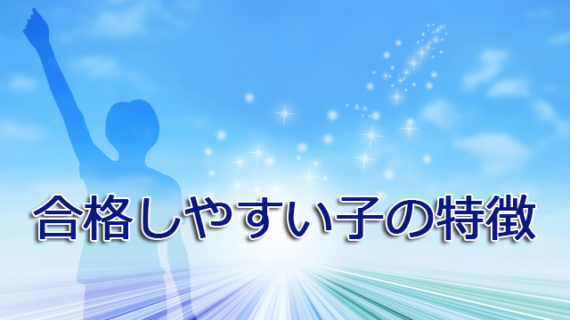

私はおよそ40年に渡って子どもに勉強を教えるという仕事を行ってきた関係で、親の皆さんから「どんな子が伸びるのか」「どんな勉強の仕方をすれば受験に合格できるのか」とよく聞かれる。
確かに私は進学塾の講師として、また高校の教師として数千人の子どもたちに受験指導の手ほどきをした経験があるので、受かる子のタイプを聞いて参考にしたい気持ちは分かります。
そこには「効果的な勉強法」とか「合格の秘訣」のような受験のプロならではの貴重な（⁉）教訓を引き出したい思いがあるのでしょう。
しかし残念ながら万人に当てはまる「必勝法」などありません。少なくとも私にとってそんな魔法の方程式は、過去40年の経験でも見い出すことはできませんでした。
たとえ努力家で学校の成績が良くても本番でヤラかしてしまう子もいるし、逆に「こりゃアカン」と我々があきらめてしまった子でも直前にスイッチが入ってアレよアレよという間に一気に伸びて受かってしまうことも珍しくありません。
良くも悪くも期待が裏切られることは日常でそういう意味では「試験は水モノ」というのは本当だと実感しました。
特に小中学生はまだ精神的に未熟で、実力があってもそれを充分発揮できるかどうかは「終わってみなければ分からない」という予測の難しさはありましたね。頭の良し悪しとか勉強量というよりはむしろメンタルの強弱のほうが大きく影響する印象でした。
だから私たちは授業をうまくやること以上に、子どもたちの意欲を喚起すること、そのために性格や家庭状況を把握しながら何とか励ますという、目に見えない地道な努力にエネルギーを割いていたように思います。
むしろ決定的な方法論がないからこそ、その都度新たな気持ちで生徒たちに向き合えたとさえ思います。
なので、「こうすれば必ずこうなる」という万能の必勝法などお伝えできませんが、そうはいっても結果として多くの子どもを見てきて「合格しやすい子」の特徴というものはあると感じています。
それは先にも言ったように才能のあるなしや努力量―それらも一定程度大切ではあるが―それよりその子の心のあり様とか姿勢というメンタルに関わる部分のほうがより大きいと感じます。
たとえば、自立心やチャレンジ意欲、自己信頼感といった前向きな心のあり方のほうが、むやみに目先の点数ばかり追い求めるよりはずっと「伸びる子」になるには大切な要素だと言えます。
自立心、意欲、自己信頼感、これらが育って初めて―結果として―勉強の成果が上がるということです。ただ机にかじりついてガリガリやれば伸びるわけではありません。
ですから親の皆さんに言いたいのは、まずは目先の点（結果）ばかり気にするのではなく子どもが自立して、何事にも恐れずチャレンジしていく環境をつくることを第１に考えて欲しい。そのためには子どもの自己肯定感を養うこと。できないこと（不足）や悪いところ（短所）ばかり見るのではなくできていること（充足）や良いところ、興味関心を伸ばすよう心がけてみて下さい。
そういう親の姿勢が「将来的に伸びる子」をつくり出すというのが私の40年間で得た結論です。